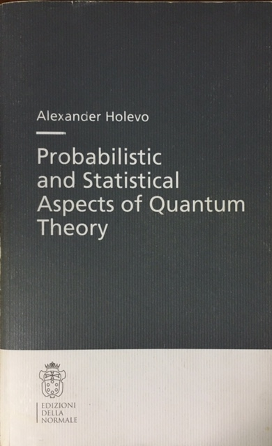

Modular operator and Holevo's commutation operator
Masaki Sohma
Introduction: Exercise of operator algebras
We will do an exercise given in the Holevo's book in the simplest case. Let us start with GNS construction for the on Neumann algebra $\mathfrak{N}=M_n(\mathbb{C})$, which is the ensemble of bounded linear operators on the Hilbert space $\mathfrak{H}=\mathbb{C}^n$ with the inner product $(x,y)=\bar{x}^Ty$. Let $\rho$ be a non-degenerated density operator and $\omega$ be the corresponding normal state given by $\omega(A)=\mbox{Tr}\rho A$. Considering an inner product on $\mathfrak{N}$ $$ \langle A, B \rangle =\frac{1}{2}\omega(BA^{\ast}+A^{\ast}B), $$ and a bilinear form on $\mathfrak{N}$ $$ [A,B]=i\omega(A^{\ast}B-BA^{\ast}), $$ we introduce an operator $\mathfrak{D}$ by $$ [A,X]=\langle A, \mathfrak{D}X\rangle. $$ The operator $\mathfrak{D}$, called a commutation operator, plays an important role in the quantum estimation thoery. We consider $\mathfrak{N}$ as a Hilbert-Shmidt space with the inner product $$ \langle A, B \rangle_2 =\mbox{Tr}(A^{\ast}B), $$ and denote it by $\mathfrak{H}_2$. Then we get a $\ast$-representation $$ \ell :\mathfrak{N}\to \mathfrak{B}(\mathfrak{H}_2), $$ where $\mathfrak{B}(\mathfrak{H}_2)$ is the ensemble of bounded operators on $\mathfrak{H}_2$ and $\ell(A)B=AB$. The state $\omega$ can be written by the inner product $\langle \cdot, \cdot\rangle_2$ as $$ \omega(A)=\mbox{Tr}(\rho^{1/2}A\rho^{1/2})=\langle \rho^{1/2},\ell(A)\rho^{1/2}\rangle_2 . $$ Now we can define the modular operator $\Delta$ for the von Neumann algebra $\mathfrak{M}=\ell(\mathfrak{N})$ and its cyclic separating vector $\rho^{1/2}$. Our purpose is to show such derived modular operator is related to the commutation operator as $$ \Delta=\left(1+\frac{i}{2}\mathfrak{D}\right)\left(1-\frac{i}{2}\mathfrak{D}\right)^{-1}. $$

Representation on $\mathfrak{H}\otimes\mathfrak{H}$
We can identify the Hilbert-Schmidt space $\mathfrak{H}_2=\mathfrak{N}=M_n(\mathbb{C})$ on $\mathfrak{H}=\mathbb{C}^n$ with $\mathfrak{H}\otimes\mathfrak{H}$ by a unitary operator satisfying $$ v(e_je_k^T)=e_j\otimes e_k $$ where $e_j=(\delta_{j1},\delta_{j,2},...,\delta_{j,n})^T$ with the Kronecker delta $\delta_{j,l}$. For $\psi=\sum_j \lambda_j e_j$ and $\phi=\sum_k \mu_k e_k$ we have $$ \begin{split} v(\psi\phi^\ast)&=\sum_{j,k}\lambda_j\bar{\mu}_k v(e_je_k^T)\\ &=\sum_{j,k}\lambda_j\bar{\mu}_k e_j\otimes e_k={\psi}\otimes \overline{\phi}. \end{split} $$
For $A\in \mathfrak{N}$, $\ell(A)$ is represented as $\tilde{\ell}(A)=A\otimes I_n$ on $\mathbb{C}^n\otimes \mathbb{C}^n$. In fact $$ \begin{split} v(\ell(A)e_je_k^T)&=v(Ae_je_k^T)=Ae_j\otimes e_k\\ &= (A\otimes I_n)e_k\otimes e_j=\tilde{\ell}(A)v(e_je_k^T), \end{split} $$ and hence $\ell(A)=v^{\ast}\tilde{\ell}(A)v$. On the other hand, $r(A):\mathfrak{N}\in X \to XA\ni\mathfrak{N}$ is represented as $\tilde{r}(A)=I_n\otimes A^T$ on $\mathbb{C}^n\otimes \mathbb{C}^n$. In fact $$ \begin{split} v(r(A)e_je_k^T)&=v(e_je_k^TA)=v(e_j(A^\ast e_k)^\ast)=e_j\otimes \overline{A^\ast e_k}\\ &= e_j \otimes A^T e_k= (I_n\otimes A^T)e_j\otimes e_k=\tilde{r}(A)v(e_je_k^T), \end{split} $$ and hence $r(A)=v^{\ast}\tilde{r}(A) v$.
Modular operator
We give a proof of Tomita-Takesaki theory in the case of $\mathfrak{M}=\ell(\mathfrak{N})$ with $\mathfrak{N}=M_n(\mathbb{C})$, where all difficulties in the theory vanish. We have $\tilde{\ell}(\mathfrak{N})^\prime=\tilde{r}(\mathfrak{N})$ and $\tilde{r}(\mathfrak{N})^\prime=\tilde{\ell}(\mathfrak{N})$ for $ \tilde{\ell}(\mathfrak{N})=\mathfrak{N}\otimes I_n,\tilde{r}(\mathfrak{N})=I_n\otimes \mathfrak{N} $ and hence $$ \begin{split} \mathfrak{M}^\prime&=v^\ast \tilde{\ell}(\mathfrak{N})^\prime v= v^\ast \tilde{r}(\mathfrak{N})v=r(\mathfrak{N}) \\ \mathfrak{M}^{\prime\prime}&=v^\ast \tilde{r}(\mathfrak{N})^\prime v= v^\ast \tilde{\ell}(\mathfrak{N})v=\ell(\mathfrak{N})=\mathfrak{M}. \end{split} $$ We use $\rho^{1/2}$ as a cyclic and separating vector; $$ \mathfrak{H}_2=\mathfrak{M}\rho^{1/2}=\mathfrak{M}^\prime \rho^{1/2}. $$
Consider anti-linear operators on $\mathfrak{H}_2$ $$ \begin{split} S&:\mathfrak{M}\rho^{1/2}\ni \ell(A) \rho^{1/2} \to \ell(A)^\ast\rho^{1/2}\in\mathfrak{M}\rho^{1/2},\\ F&:\mathfrak{M}^\prime \rho^{1/2}\ni r(A) \rho^{1/2} \to r(A)^\ast\rho^{1/2}\in \mathfrak{M}^\prime \rho^{1/2}. \end{split} $$ Here $$ \ell(A)^\ast=v^\ast(A\otimes I_n)^\ast v=v^\ast A^\ast \otimes I_n v=\ell(A^\ast), $$ and $$ r(A)^\ast=v^\ast (I_n\otimes A^T)^\ast v=v^\ast I_n\otimes (A^T)^\ast v=I_n\otimes (A^\ast)^T=r(A^\ast). $$ The linear operator $\Delta=FS$ on $\mathfrak{H}_2$ is called a modular operator.
For the operator $S$, we have $$ S(X)=\rho^{-1/2}X^*\rho^{1/2}. $$ In fact, putting $X=\ell(A)\rho^{1/2}=A\rho^{1/2}$,$Y=\ell(A)^\ast=\ell(A^\ast)=A^\ast \rho^{1/2}$, $$ Y=(X\rho^{-1/2})^\ast \rho^{1/2}=\rho^{-1/2}X^\ast\rho^{1/2}, $$ On the other hand, for the operator $F$, we have $$ F(X)=\rho^{1/2}X^\ast \rho^{-1/2}, $$ In fact, putting $X=r(A)\rho^{1/2}=\rho^{1/2}A$,$Y=r(A)^\ast=r(A^\ast)= \rho^{1/2}A^\ast$, $$ Y= \rho^{1/2}(\rho^{-1/2}X)^\ast=\rho^{1/2}X^\ast\rho^{-1/2}. $$ Thus we have $$ \Delta(X)=FS(X)=F(\rho^{-1/2}X^*\rho^{1/2})=\rho^{1/2}(\rho^{-1/2}X^*\rho^{1/2})^\ast \rho^{-1/2}=\rho X \rho^{-1}, $$ that is, $\Delta=v^\ast(\rho \otimes ({\rho}^{-1})^T) v$. It follows that $\Delta^\ast=v^\ast (\rho\otimes({\rho}^{-1})^T)^\ast v=\Delta$. Since $\Delta^{-1/2}=v^\ast(\rho^{-1/2}\otimes ({\rho}^{1/2})^T) v$, $$ \Delta^{-1/2}(X)=\rho^{-1/2}X\rho^{1/2} $$ and hence $$ S(X)=\Delta^{-1/2}(X^\ast)=\Delta^{-1/2}J(X), $$ where $J$ is an anti-linear operator defined by $J(X)=X^\ast$. In a similar way we have $$ F(X)=\Delta^{1/2}J(X). $$ In addition $$ J\Delta J(X)=(\rho X^\ast \rho^{-1})^\ast=\rho^{-1}X\rho=\Delta^{-1}(X). $$ In summary $$ \begin{split} S&=\Delta^{-1/2}J=F^\ast=J\Delta^{1/2}\\ F&=\Delta^{1/2}J=S^\ast=J\Delta^{-1/2}\\ J\Delta J&=\Delta^{-1}\\ JSJ&=J\Delta^{-1/2}J^2=J\Delta^{-1/2}=F\\ JFJ&=J\Delta^{1/2}J^2=J\Delta^{1/2}=S. \end{split} $$ We have $$ \Delta^{-it}\ell(A)\Delta^{it}=\ell(\rho^{-it}A\rho^{it}). $$ Indeed $$\Delta^{-it}\ell(A)\Delta^{it}(X)=\Delta^{-it}(A\rho^{it}X\rho^{-it})=\rho^{-it}A\rho^{it}X\rho^{-it}\rho^{it}=\rho^{-it}A\rho^{it}X$$ and $$ \ell(\rho^{-it}A\rho^{it})X=\rho^{-it}A\rho^{it}X. $$ Thus we have $$ \Delta^{-it}\mathfrak{M}\Delta^{it}=\mathfrak{M}. $$ Finally we have $$ J\mathfrak{M}J=\mathfrak{M}^{\prime}, $$ which is obtained from $$ J\ell(A)J(X)=J(AX^\ast)=(AX^\ast)^\ast=XA^\ast $$ and $$ r(A)X=XA. $$ Remark that the above discussion can be easily extend to the case where $\mathfrak{N}=M_{m_1}(\mathbb{C})\oplus \cdots \oplus M_{m_n}(\mathbb{C})$. The proof of Tomita-Takesaki theory for a finite dimensional von Neumann algebra is given in the Appendix.
Relation between Holevo's commutation operator and modular operator
In the quantum estimation theory we often consider $\mathfrak{N}$ as a Hilbert space with the inner product $$ \langle A,B \rangle = \omega(\frac{1}{2}(BA^{\ast}+A^{\ast}B)), $$ and denote the Hilbert space by $\mathfrak{K}$. On the other hand we define the bilinear form on $\mathfrak{K}(=\mathfrak{N})$ as $$ [A,B]=i\omega(A^{\ast}B-BA^{\ast}). $$ Then the anti-Hermitian operator satifying the following conditions is called commutation operator. $$ [A,X]=\langle A, \mathfrak{D}X\rangle, \quad A,X\in \mathfrak{K} $$
Since it holds for $A,X,Y\in \mathfrak{H}=\mathfrak{N}=\mathfrak{K}$ that $$ \begin{split} [A,X]&=i\omega(A^\ast X-XA^\ast)=i\mbox{Tr}\rho(A^\ast X-XA^\ast)\\ &=\mbox{Tr}A^\ast i(X\rho-\rho X)=\langle A, i(X\rho-\rho X)\rangle_2\\ \langle A,Y\rangle&=\omega((YA^\ast+A^\ast Y)/2)=\mbox{Tr}\rho((YA^\ast+A^\ast Y)/2)\\ &=\mbox{Tr}A^\ast(\rho Y+Y\rho)/2=\langle A, \rho Y+Y\rho \rangle_2, \end{split} $$ we have $$ (\rho Y+Y\rho)/2=i(X\rho-\rho X), $$ which can be represented on $\mathfrak{H}\otimes \mathfrak{H}$ as $$ (I_n\otimes \rho + \rho\otimes I_n)v(Y)=2i(\rho\otimes I_n -I_n\otimes \rho )v(X). $$ Thus $$ v(\mathfrak{D}X)=v(Y)=2i(I_n\otimes \rho + \rho\otimes I_n)^{-1}(\rho\otimes I_n -I_n\otimes \rho )v(X), $$ that is, $$ \mathfrak{D}=v^\ast[ 2i(I_n\otimes \rho + \rho\otimes I_n)^{-1}(\rho\otimes I_n -I_n\otimes \rho )]v $$ Moreover $$ \begin{split} 1+\frac{i}{2}\mathfrak{D}&=v^\ast [ 2(I_n\otimes \rho+\rho\otimes I_n)^{-1} I_n\otimes \rho]v,\\ 1-\frac{i}{2}\mathfrak{D}&=v^\ast [ 2(I_n\otimes \rho+\rho\otimes I_n)^{-1}\rho \otimes I_n]v,\\ 1+\frac{1}{4}\mathfrak{D}^2&=v^\ast[ 4(I_n\otimes \rho+\rho\otimes I_n)^{-2}\rho \otimes \rho]v.\\ \end{split} $$
Finally we get $$ \Delta=\left(1+\frac{i}{2}\mathfrak{D}\right)\left(1-\frac{i}{2}\mathfrak{D}\right)^{-1}, $$ and $$ \frac{i}{2}\mathfrak{D}=(1-\Delta)(1+\Delta)^{-1} $$
Appendix
In this section we prove the Tomita-Takesaki theorem for a finite dimensional von Neumann algebras $\tilde{\mathfrak{N}}$ on a Hilbert space $\mathfrak{K}$. We assume there exists a cyclic separating vector $\xi\in \mathfrak{K}$; $\mathfrak{K}=\tilde{\mathfrak{N}}\xi=\tilde{\mathfrak{N}}^\prime\xi$. Then we define operators $\tilde{S},\tilde{F},\tilde{\Delta}$ on $\mathfrak{K}$ as $$ \begin{split} \tilde{S}&:\tilde{\mathfrak{N}}\xi\ni X\xi \to X^\ast \xi \in \tilde{\mathfrak{N}}\xi,\\ \tilde{F}&:\tilde{\mathfrak{N}}^\prime\xi\ni Y\xi \to Y^\ast \xi \in \tilde{\mathfrak{N}}^\prime\xi,\\ \tilde{\Delta}&=\tilde{F}\tilde{S}. \end{split} $$ The Wedderburn theorem states that a finite dimensional $C^{\ast}$ algebra is $\ast$-isomorphic to a direct sum of simple matrix algebras. That is, there exists $\ast$-isomorphic function $\varphi$ for von Neumann algebra $\mathfrak{N}$ such that $$ \varphi:\tilde{\mathfrak{N}}\simeq \mathfrak{N}:=M_{m_1}(\mathbb{C})\oplus \cdots \oplus M_{m_n}(\mathbb{C}) $$ Let us consider the state on $\tilde{\mathfrak{N}}$ as $$ \omega_\xi(A)=(\xi,A\xi),\quad A\in \tilde{\mathfrak{N}},\xi\in \mathfrak{K}. $$ Using this state we can define the state on $\mathfrak{N}$ $$ \omega(A)=\omega_\xi(\varphi^{-1}(A)),A\in \mathfrak{N}. $$ Applying the discussion in the previous sections to the von Neumann algebra $\mathfrak{N}$ and $\omega$, we get the von Neumann algebra $\mathfrak{M}=\ell (\mathfrak{N})$ on the Hilbert space $\mathfrak{H}_2$, the cyclic separating vector $\rho^{1/2}\in \mathfrak{H}_2$ and operators $S, F$ and $\Delta$ on $\mathfrak{H}_2$. Then we obtain $$ \langle \pi(A)\rho^{1/2},\pi( B)\rho^{1/2}\rangle_2=(\varphi^{-1}(A)\xi,\varphi^{-1}(B)\xi), $$ which means $$ U:\mathfrak{H}_2\ni\pi(A)\rho^{1/2}\to \varphi^{-1}(A)\xi\in\mathfrak{K}, \quad A\in \mathfrak{N} $$ gives a unitary operator from $\mathfrak{H}_2$ to $\mathfrak{K}$. This unitary operator combines $\Delta$ and $\tilde{\Delta}$ as $$ \tilde{\Delta}=U\Delta U^{\ast}, $$ and gives the main result of Tomita-Takesaki Theory, $$ \tilde{\Delta}^{-it}\tilde{\mathfrak{N}}\tilde{\Delta}^{it}=\tilde{\mathfrak{N}}. $$